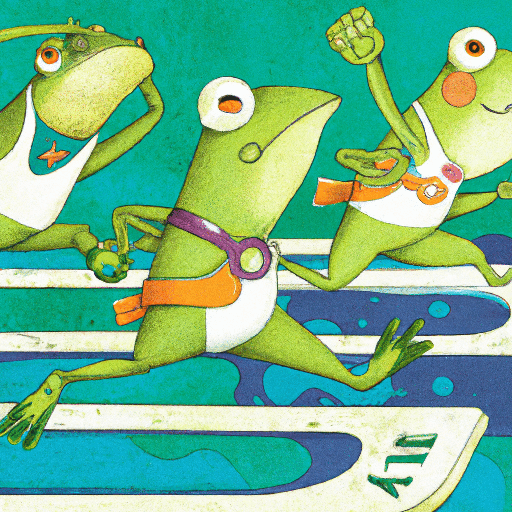

Capitolo Secondo

C'era una volta... ehm... tante volte, non solo una, una rana chiamata
Rano. Rano passava la sue giornate a saltare in lungo e largo per lo
stagno. Per una rana questo è un attività di tutti i giorni. Ma Rano
aveva qualcosa di speciale. Non saltava solo di qualche ranametro (
l'unita di misura delle rane in cui 1 metro = 2 ranametro), ma
addirittura fino a 20 ranometri!
Gli amici di Rano erano sempre sorpresi di quanto lontano potesse
saltare. Ravide e Remma erano i suoi amici preferiti. Ravide
progettava le ninfee dove le rane galleggiavano nello stagno. Remma
era una ingegnere e costruiva le ninfee dello stagno.
Un giorno Rano, Ravide e Remma stavano giocando al loro gioco
preferito. Dovevao mettere una ninfea una sopra l'altra, e fare una
pila il piu alto possibile e poi salirci sopra e non cadere.

"Ancora una volta hai vinto tu, Rano" disse Remma con il viso un po
triste.
"Non possiamo competere con il tuo salto" aggiunse Ravide.
"Dovresti avere una categoria solo per te"
Rano non era sopreso dall'idea dei suoi amici. Infatti, aveva da
sempre pensato che potesse competere con i migliori saltatori del
mondo.
"Avete ragione amici!" esclamò Rano. "Ho deciso di partecipare alle
Olimpiadi!"
Remma e Ravide si guardarono e poi iniziarono a ridere. "Oh Rano, ma
non lo sai che solo Le Grandi Gambe possono partecipare? E poi,
tu salti piu in alto di tutte le rane, ma non hai speranza contro
quelle gambe lunghissime che ogni giorno passano vicino allo stagno.
"
Il sorriso di Rano scomparve, e per un attimo mille pensieri si
mossero nella sua testa. "E perchè noi Rane non abbiamo le nostre
Olimpiadi?" chiese Rano.
Tutti e tre rimasero in silenzio. Era una strana domanda, a cui non
avevano una risposta...